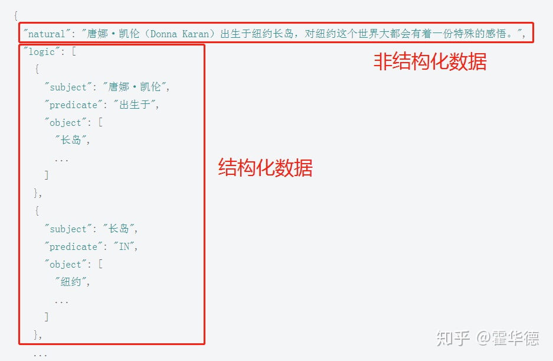
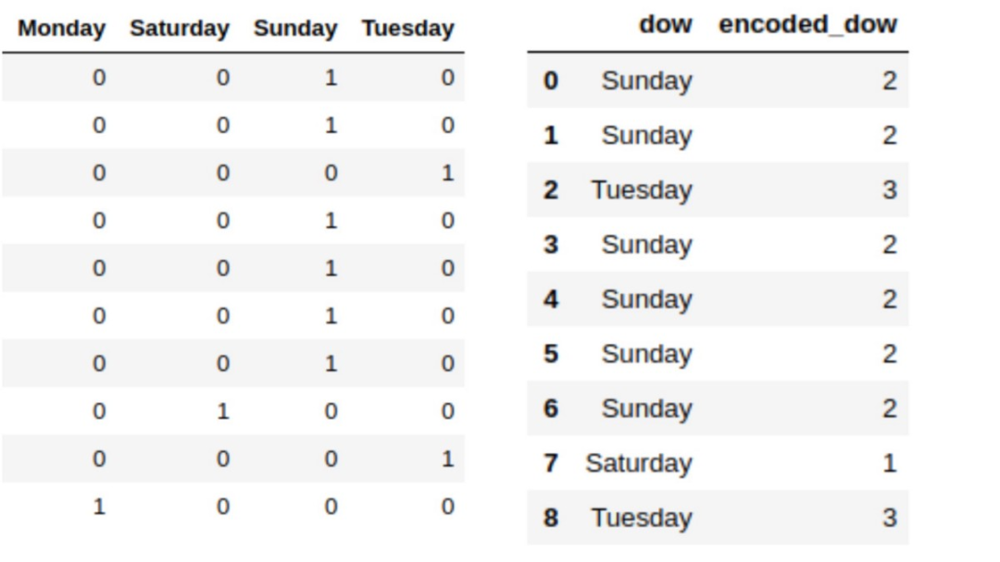
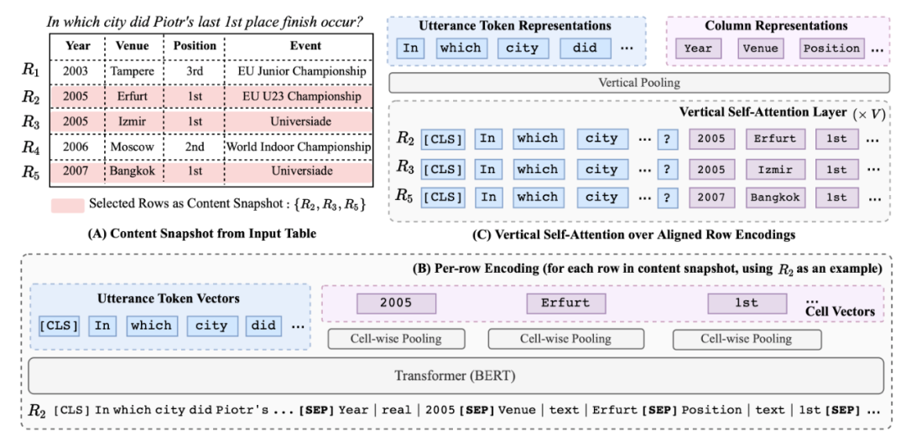
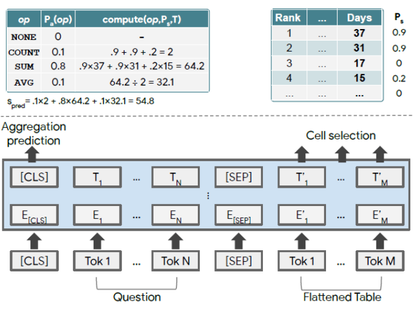
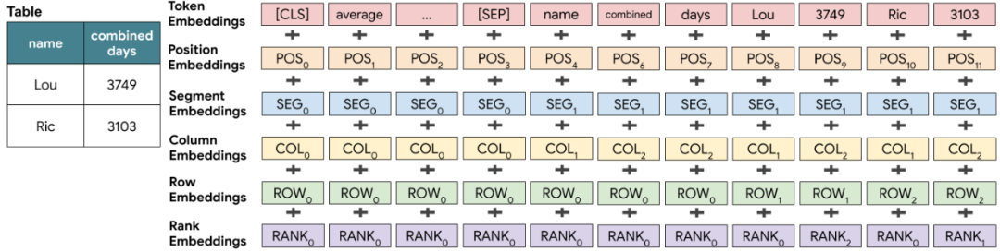
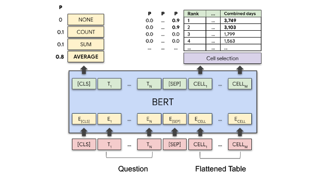
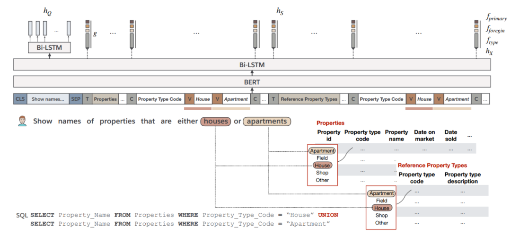
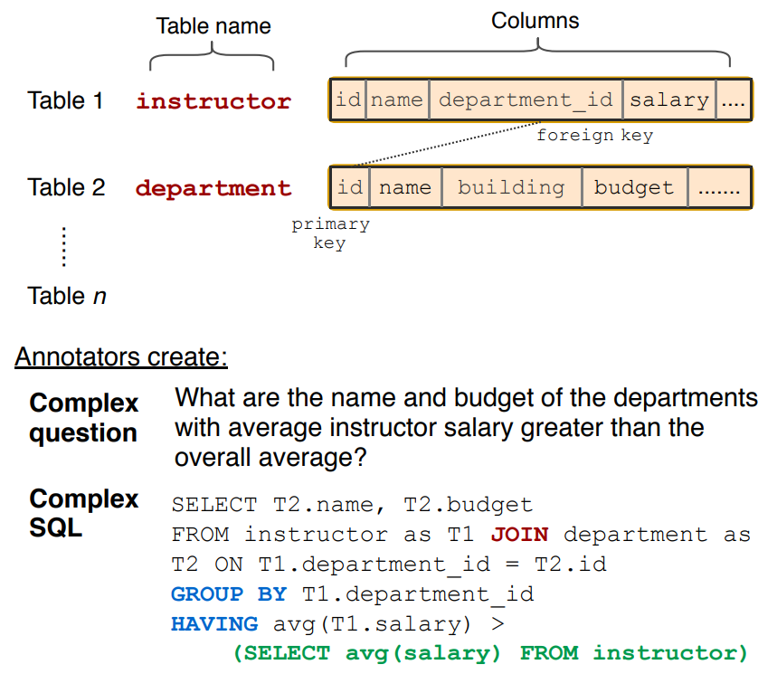
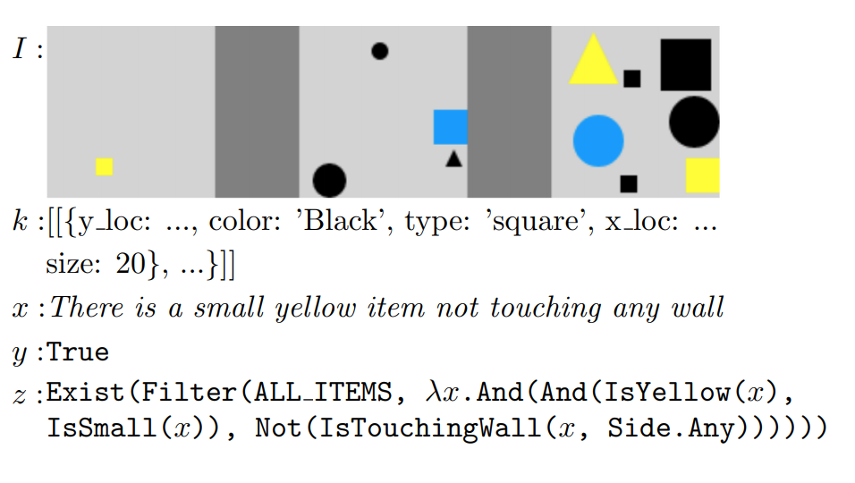

结构化数据处理实践¶
非结构化数据是指没有按照预定义的方式组织或缺少特定数据模型的数据，比如我们常见的文章、对话等等。
而本文着重提及的结构化数据则是指数据点之间具有清晰的、可定义的关系，并包含一个预定义的模型的数据（如图 1 所示）。看起来结构化数据应该更容易处理，而基于机器学习的特性（特征提取），大家更多的注意力集中在了对文本这类非结构化数据的处理，好像对于结构化数据的处理过去都不怎么热门。但是随着机器学习的发展，过去传统的结构化数据分析方法已经不能满足我们的需求了，而且这些结构化数据其实都是质量很高的数据，如何在神经网络中利用这些数据也是很重要的任务。

图 1：结构化数据和非结构化数据（图源：https://www.zhihu.com/question/360304708）
因此，本文会先简单介绍结构化数据，有了对结构化数据的理解，本文又介绍了利用传统方法和深度学习处理结构化数据的基本思路以及为什么要处理结构化数据。同时，结构化数据的语义学习也是一个让结构化数据「升华」的重要一步，于是我们又结合近期的几篇论文列举了结构化数据预训练的方式。最后，我们列举了几个处理结构化数据常见的下游任务和数据集，以便想做更深入研究的小伙伴自取。值得注意的是，本文主要介绍结构化数据处理的主干架构，而不是对多篇论文的解读，所以无法包含论文中所有的精彩的创新点，只选取了对结构化数据处理流程有用的大框架内容进行讲解。
1. 传统方法——树
虽然绝大多数数据是非结构化格式的，但是结构化数据普遍存在于各类商业应用软件和系统中，例如产品数据存储，交易日志，ERP 和 CRM 系统中都存在大量结构化数据，这些结构化数据仍应用着陈旧的数据技术处理，如基于规则的系统，决策树等。这样的方法需要人工进行特征提取，操作繁琐且需要耗费大量人力进行数据标签 [1] 。
在正式介绍处理结构化数据的传统方法之前，先回忆一下什么是非结构化数据，也就是通常使用的杂乱无章的文本数据。非结构化数据通常是不能用结构化数据的常规方法以传统方式进行分析或处理的，所以这也成为 AI 领域一个常见的难题，要理解非结构化数据通常需要输入整段文字，以识别其潜在的特征，然后查看这些特征是否出现在池中的其他文本中。因此，在处理此类任务时，深度学习以其出色的特征提取能力一骑绝尘，于是所有人都开始想着把神经网络用在结构化数据上——建个全连接层，把每一列的内容作为输入，再有一个确定好的标签，就可以进行训练和推理了。
然而，在现实中，人们更倾向于使用树来处理结构化数据。因为非结构化数据虽然是「非常规的」，但我们通常处理的都是单一类型的数据，比如像素、体素、音频频率、雷达反向散射、传感器测量结果等等。但是在结构化数据中，我们往往需要处理多种不同的数据类型；这些数据类型大致可以分为两大类：数值数据（图像，数字等等）和类别数据。这也带给了我们很多难题 [2]。
以类别数据为例，因为包含神经网络在内的大多数算法都还不能直接处理这些数据，所以我们需要在训练之前对这些数据进行预处理，编码变量有很多可选的方法，比如标签 / 数值编码和 one-hot 编码（如图 2 所示）。

图 2：编码方式（图源：https://www.jiqizhixin.com/articles/2017-12-04-7）
但是这时问题就来了，如果我们使用 one-hot 或任意标签编码这个变量，那么我们就要假设各个层次之间都分别有相等和任意的距离 / 差别，但是我们知道肯定不是这样的。举个很简单的例子，在商业场景，假设我们得到了一周的销售额，想要预测下周的，这个时候，周五周六的差距跟周六周日的差距明显不同（周末内和周末外，再加上公司的 996），所以模型也应该知道这一点。但是，神经网络的连续性本质限制了它们在类别变量上的应用。因此，用整型数表示类别变量然后就直接应用神经网络，不能得到好的结果[3]。
树就不用考虑这么多了，它们不需要假设类别变量是连续的，因为它们可以按需要进行分支来找到各个状态，因此在这些基于结构化数据的应用中，我们更容易见到树的影子。但是简单的只使用树，有很多困难的任务是无法完成的，最常见的例子就是基于结构化数据的问答，树模型就很难处理这种多源任务。而深度学习模型的能力很强大，只需要找到合适的方法，就能让其也在这一领域大放异彩。
假设我们列中的信息是一个星期中的某一天。如果我们使用 one-hot 或任意标签编码这个变量，那么我们就要假设各个层次之间都分别有相等和任意的距离 / 差别。
2. 新型利器——深度学习
正如前面所说，我们希望能够体现这些变量之间的距离，而体现距离本质上就是在寻找这些结构化数据的语义，对于 NLPer 们来说，听到这个是不是就觉得无比熟悉了？那么到底该怎么做呢？嵌入到新空间呗！但是在真的嵌入之前，我们还是要先了解将深度学习应用于结构化数据的挑战在哪。在读完很多篇结构化数据的论文后，就可以发现目前要解决的问题主要有：
-
数据清洗。要在结构化数据 AI 应用上有所成果，首先需要解决人工数据清洗和准备的问题，找到极少或者没有人为干预的自动化方法，才能使得这一应用可落地可拓展。
-
异构数据。处理结构化数据的其中一大挑战在于，结构化数据可能是异构的，同时组合了不同类型的数据结构，例如文本数据、定类数据、数字甚至图像数据。其次，数据表有可能非常稀疏。想象一个 100 列的表格，每列都有 10 到 1000 个可能值（例如制造商的类型，大小，价格等），行则有几百万行。由于只有一小部分列值的组合有意义，可以想象，这个表格可能的组合空间有多么「空」。
-
语义理解。这就是 NLPer 们常见的任务了，找到这些结构化数据的语义特征。处理结构化数据并不仅仅依赖于数据本身的特征 (稀疏，异构，丰富的语义和领域知识），数据表集合 (列名，字段类型，域和各种完整性约束等）可以解码各数据块之间的语义和可能存在的交互的重要信息。也就是说，存储在数据库表中的信息具有强大的底层结构，而现有的语言模型（例如 BERT）仅受过训练以编码自由格式的文本。
对于异构数据的处理非常复杂，本文暂时不做涉及，后文主要对多篇论文中数据清洗和预训练的过程进行总结，同时会从学术角度介绍部分当前需要应用结构化数据的下游任务。尽管大部分需要处理结构化数据的任务都是基于企业需求的，但是学术角度上总结的下游任务更加通用，在解决具体的企业需求时，可以基于这些通用任务的方案提出更加具体的解决方案。
同时，现有的语言模型除了不能很好地表征结构信息外，还有一些其他的问题——这些表格可能很巨大，而语言模型本身的计算量也很巨大，当两个「巨大」碰到一起时，所需要的计算量可想而知。同时并且使用占用大量资源的 LM 对所有行进行天真的编码在计算上是棘手的。最后，与大多数基于文本的 QA 任务（例如 SQuAD，Rajpurkar 等人，2016）不同，QA 任务可以表述为通用答案跨度选择问题，并可以通过带有附加分类层的预训练模型来解决，而语义解析是高度领域化的，具体来说，神经解析器的体系结构与其基础数据库的结构紧密关联（例如，基于 SQL 的系统和其他类型的 DB 使用不同的编码器模型。
3. 结构化数据清洗
数据清洗一直是一个令人头疼的问题，不管是在企业中，还是在学术的较新领域中，一个优秀的对脏乱差数据进行清洗的方案一定是不可或缺的。除了某些特定的需求外，经过预处理之后的结构化数据，应该满足以下特点：
-
所有值都是数字–机器学习算法取决于所有数据都是数字。这意味着我们需要替换缺少的值，非数字值（在类别或文本列中的内容）需要替换为数字标识符。
-
标识并清除具有无效值的记录（例如，有轨电车网络所在地理区域之外的位置，或者无效的有轨电车 ID 的车辆 ID）。消除无效值的原因是为了防止模型使用无法反映实际问题的数据进行训练。
-
识别并消除了无关的类别。例如，我们知道「方向」列应仅包含 5 个有效值（指南针点和一个指示「两个方向」的标识符）。所有记录都需要使用相同的一致类别。
基于此，本小节会对论文中数据清洗的方式以及集成的数据清洗工具进行简单总结。
3.1 全面的数据预处理工具——HoloClean
HoloClean 是一个统计推断引擎，用于清洗、加强数据的开源集成工具（github: https://github.com/HoloClean/HoloClean）。作为弱监督的机器学习系统，HoloClean 利用可用的规则、值相关性、参考数据以及其他多种标准来构建概率模型，以准确地捕获数据生成过程，并将该模型用于各种数据管理任务。HoloClean 允许数据从业者和科学家节省大量时间来构建零碎的清洁解决方案，而以声明性的方式有效地交流其领域知识，从而能够从嘈杂，不完整和错误的数据中进行准确的分析，预测和见解。这里面训练的模型主要是为了理解数据的生成和「污染」过程，因此这些模型可用于结构化数据的准备和清洗，例如错误检测、预测缺失值、错误校正、空值补齐、数据融合等。
这个项目也一直在更新自己的论文，也就是说还处于非常好的维护状态中，在不想自己进行数据预处理，又有一定的计算资源的情况下，直接求助集成工具不失为一个很好地选择。
3.2 手动预处理
如果自己手里的算力并不充足，或是对于预处理的需求较为具体，可以考虑手动定义数据清洗的规则，在 TaBERT[4]中，就进行了极其完备的预处理：
（1）删除名称超过 10 个 token 的列;
（2）过滤具有两个以上非 ASCII 字符或 20 个 token 的单元；
（3）清除空或重复的行和列；
（4）筛选少于三行四列的表；
（5）利用 spaCy，通过对列标记的 NER 标签进行多数表决来识别列的数据类型（文本或实值）；
（6）旋转垂直方向的表。
当然，除了这些以外，基于自己的任务，也可以做不同的预处理调整。尤其是对于 「rubbish in, rubbish out」深度学习来说，好的预处理方案是极其重要的。
在预处理完成后，就可以正式进入预训练阶段了。
4. 结构化数据预训练
正如第二节所说，为了能够在结构化数据中更好地应用神经网络，我们需要把结构化数据嵌入到一个新的空间中去，以实现结构化数据的表征。在这方面，非结构化数据的处理中已经做了很好地表率，也就是文本的预训练。但是具体怎么预训练，预训练的任务有什么，是一个很具有挑战性也很值得去探索的方向。因此，本小节对论文中出现的预训练目标和方式进行了简单总结。
4.1 TaBERT：: Pretraining for Joint Understanding of Textual and Tabular Data [4]

图 3：TaBERT 框架（图源自原论文）
从论文的题目可以看出，TaBERT 联合自然语言描述和表格数据（也就是结构化数据的一种表示形式）进行了预训练，图 3 显示了 TaBERT 的预训练过程，首先给定一个自然语言描述 u 和表格 T，模型从表中选取与描述最相关的几行作为数据库内容的快照（图 3，A），然后对其中的每一行进行线性化，图 3(B)中最下方的内容，就是线性化的结果，其实就是将表格内容平摊开了，如果想更详细的了解线性化过程，可以去读一下原论文。然后，线性化的表格和自然语言描述就被输入到 Transformer 中，输出编码后的单词向量和列值向量。随后编码后的所有行被送入垂直自注意力编码层（图 3(C)中的 Vertical Self-Attention Layer，本质上是为了在不同列中传播信息），一个列值（一个单词）通过计算同一列的值（同一单词）的垂直排列向量的自注意力得到。最终经过池化层得到单词和列的表示（图 3C 中最上方）[6]。
了解完了 TaBERT 产生 embedding 的方式，就该了解一下 TaBERT 具体是怎么进行预训练的了。具体来说，TaBert 使用不同的目标来学习上下文和结构化表的表示。对于自然语言上下文，使用遮蔽语言模型（MLM）目标，在句子中遮蔽 15% 的 token。而对于列的表示，TaBert 设计了两个学习目标：
-
遮蔽列预测（Masked Column Prediction，MCP）目标使模型能够恢复被遮蔽的列名和数据类型。具体来说就是从输入表中随机选取 20% 的列，在每一行的线性化过程中遮蔽掉它们的名称和数据类型。给定一列的表示，训练模型使用多标签分类目标来预测其名称和类型。直观来说，MCP 使模型能够从上下文中恢复列的信息。
-
单元值恢复（Cell Value Recovery，CVR）目标能够确保单元值信息能够在增加垂直注意力层之后能够得以保留。具体而言，在 MCP 目标中，列 ci 被遮蔽之后（单元值未被遮蔽），CVR 通过这一列某一单元值的向量表示 s
4.2 TaPaS: Weakly Supervised Table Parsing via Pre-training[5]

图 4：TaPas 模型（下）、单元值预测（右上）和集合操作预测（左上）（图源自原论文）
Jonathan Herzig 等人提出的 TaPas 本意不是为了预训练，更多的是针对具体应用的方法（端到端的模型）—— 不需要生成逻辑表达式，直接通过表格回答问题。如图 4 所示，该模型首先将表格平铺成单词序列，并将单词分割成 wordpiece（token），并将其连接到问题 token 之后。此外模型还添加了两个分类层，用于选择单元格和对单元格进行操作的聚合操作符。
在预训练时，类似于 TaBert，TaPas 也采用了 MLM（masked language model）作为预训练目标。同时作者利用了数据集中的 label 还尝试添加了另一个训练目标：判断表格是否符合文本描述，但是发现对于其任务并没有提升。 为了提升训练效率，TaPas 将序列的长度控制在一定范围以内 。 为了适应这一点作者在进行预训练时，从描述中随机选取 8~16 个单词的文本片段。 对于表，首先添加每个列和单元格的第一个单词，然后逐渐添加单词知道达到最大序列长度。为每个表生成 10 个这样的序列。
为了更好地理解 TAPAS 的使用过程，我们以「Average time as champion for top 2 wrestlers?」这个问题为例，看一下 TAPAS 具体是怎么工作的。因为 TAPAS 还是基于 BERT 的，所以图 5 所示的嵌入过程大家应该还算熟悉，只不过在 BERT 的基础上，TAPAS 加入了 colomn embedding 还有 row embedding 这类学习到的嵌入。同时，为了表示每列中数字的序列（order），还加入了一种 rank embedding，比如 3749 比 3103 大，所以 3103 是 rank1，而 3749 是 rank0。得到了这些单独的 embedding 之后，这些 embedding 又通过累加的方式合并在一起。

图 5：基于 BERT 的结构化数据 embedding 生成过程。图源：https://ai.googleblog.com/2020/04/using-neural-networks-to-find-answers.html
刚刚算出的最终的 embedding 会被送进 BERT，然后得到我们最终的输出（如图 6 所示）：
1)每个表单元格都会有一个分数，以表示该单元格成为答案的一部分的概率;
2)一个聚合操作，指示应用哪个操作 (如果有的话) 来生成最终答案。
回到我们例子里的问题，可以看到模型应该选择「combined days」列的前两个单元格（右上角，因为概率较高），同时应该应用「average」操作（左上角）。

图 6：预测结果
图源：https://ai.googleblog.com/2020/04/using-neural-networks-to-find-answers.html
4.3 Bridging Textual and Tabular Data for Cross-Domain Text-to-SQL Semantic Parsing [7]

图 7：BRIDGE 编码器工作原理（图源自原论文）
BRIDGE 是一个联合表示问题、关系数据库模式和数据库值的通用框架，可以广泛应用于需要联合文本 - 表格数据理解的各种问题。如图 7 所示，输入问题中的两个词 「houses」和「apartments」都分别与两个 DB 字段匹配。这些匹配的值被附加到混合序列中对应的字段名中（图 7 上方五颜六色的部分，也就是后面所说的序列化）。 与 TaBERT 相比，其最大的不同就是在预训练时同时处理不同源的表格。 将 TaBERT 应用于 Spider 数据中的任务时，它是先分别对每个表进行编码，并通过分层注意建模相互关系。相比之下，如刚刚所说，BRIDGE 序列化了关系数据库模式，并使用 BERT 建模跨表依赖关系。
具体来说，BRIDGE 将关系 DB 连接到问题上，形成了混合标记序列。在图 5 中，问题是「Show names of properties that are either houses or apartments」，也就是混合标记序列的最前端的 CLS 到 SEP 之间的内容。然后后面的 T 代表表格的名字，C 代表后面的内容是列的名字。在这个基础上，作者提取了锚文本（Anchor text），也就是 houses 和 apartments，以使得问题和关系 DB 对齐。然后将这些锚文本放到混合序列中对应的字段里，也就是 V 后面的内容。这些东西会被输入到 BERT 和 Bi-LSTM 中，最终通过 decoder 生成对应的 Clause，也就是图 7 左下角的内容。
5. 结构化数据下游任务
在完成了结构化数据的预训练后，就可以开始在下游任务上进行 fine-tune 了。因为本文主要介绍的还是与文本联合的预训练，所以下游任务也主要是那些同时需要理解文本和结构化数据的任务。在介绍具体的任务前，要先介绍一下出镜率很高的两个基准数据集。
-
Spider 是一个 Text-to-SQL 数据集，包含 10181 条数据和超过 200 个数据库。每一条数据包括：一条描述、一个数据库（包含一个或多个表）、和一条标注的 SQL 语句。SQL 语句通常需要连接多个表进行查询，比如：SELECT COUNT(*) FROM Country JOIN Lang ON Country.Code = Lang.CountryCode WHERE Name = 'Aruba' 。
-
WikiTableQuestions 是一个弱监督语义解析数据集，包含来自维基百科的 22033 条句子和 2108 个半结构化的网络表格。与 Spider 数据集相比，WikiTableQuestions 并不涉及夺标的连接，但是需要对表中的一系列条目进行组合、多步推理。
5.1 Text-to-SQL
这基本是在这些论文中最常见的下游任务了，简单来说，就是在给定关系型数据库（或表）的前提下，由用户的提问生成相应的 SQL 查询语句。

图 8：Text-to-SQL (Spider 数据集的一个例子)。图源：[8]
图 8 展示了一个具体的例子，问题为：有哪些系的教员平均工资高于总体平均值，请返回这些系的名字以及他们的平均工资值。可以看到该问题对应的 SQL 语句是很复杂的，并且有嵌套关系。
面向表格的语义解析（如 Text-to-SQL）不同于一般的问答任务，不仅需要编码通用文本（如：「哪个国家的 GDP 最高」），还需要编码结构化的数据（如：有关各国经济情况的若干表格）。在这里，如何理解数据库表格中的结构信息（如：数据库名称、数据类型、列名以及数据库中存储的值等）以及自然语言表达和数据库结构的关系（如：GDP 可能指的是表中的「国民生产总值」一列）就成为了较为关键的挑战点。
这个任务可以拓展成语义解析任务，具体来说，就是根据用户定义的语法，将自然语言描述翻译成中间表示，中间表示可以转换为特定领域的查询语言（如 SQL）。比如 TaBert 中就是使用 IRNet 中的 SemQL（可以理解为 SQL 的简化版本）作为底层的语法表示。
同时这个任务还有一个简化版本，具体来说就是不需要生成逻辑查询语言，直接从表格中找到问题的答案，具体来说就是更加 end-to-end，但是任务也就更加复杂。在具体实验的时候用的数据集也是 spider，只不过跳过了生成查询语句的过程。
5.2 弱监督的语义解析
语义分析的目标是将语言表示映射到一个可执行程序中。之前的语义分析统计学习工作采用了监督学习模式，其中训练样本包括成对的语句和程序。然而大规模的收集训练样本是非常困难的，因为需要大量熟悉正规语言的专家标注者。因此，越来越多的人开始研究弱监督语义解析。在这个任务中，训练样本对应于语句 - 符号对，其中符号是针对语境执行程序的结果，如图 9 所示。一般来说，符号收集工作更加简单，它可以由非专家来完成。

图 9：弱监督的语义解析。图源：[9]
因此，弱监督语义解析是指从其执行结果中推断出正确查询的强化学习任务。与有监督的语义解析相比，弱监督语义解析更具有挑战性。因为解析器无法直接获取正确的查询，必须在执行结果的奖励信号的指导下，在指数级的空间中进行搜索。
6. 总结
读到最后，就应该懂了为什么我在一开始先介绍非结构化数据，现在的任务大多都是基于特定任务的非结构化数据和结构化数据的结合，如果回到最初语言模型的初衷，那我们的问题就是如何得到一种更易于广泛应用的结构化数据预训练模型，这样才能挖掘出非结构化数据的宝藏，从而灵活的应用到不同的下游任务中去。如果结构化数据的完全通过非结构化数据来进行预训练，如何让得到的表征可以更加通用，是个非常值得研究的未来方向。同时，如何解决内容异构也是一个极具挑战但是极有价值的问题，不同于简单的多任务学习，这里的异构内容的异构性可能是非常大的，所以这也是一个非常值得探索的方向。
参考资料¶
[1] 结构化数据不应该被人工智能遗忘！Accessed at: https://www.leiphone.com/news/202002/XgDRsBy1ged0A8sn.html
[2] 如何用深度学习处理结构化数据？Accessed at: https://www.jiqizhixin.com/articles/2017-12-04-7
[3] Cheng Guo, Felix Berkhahn (2016, April, 22) Entity Embeddings of Categorical Variables. Retrieved from https://arxiv.org/abs/1604.06737.
[4] Yin, P., Neubig, G., Yih, W. T., & Riedel, S. (2020). TaBERT: Pretraining for Joint Understanding of Textual and Tabular Data. arXiv preprint arXiv:2005.08314.
[5] Istrate, R., Scheidegger, F., Mariani, G., Nikolopoulos, D., Bekas, C., & Malossi, A. C. I. (2019). TAPAS: Weakly Supervised Table Parsing via Pre-training. Proceedings of the AAAI Conference on Artificial Intelligence, 33(01), 3927-3934. https://doi.org/10.1609/aaai.v33i01.33013927
[6] ACL2020表格预训练工作速览. Accessed at: https://cloud.tencent.com/developer/article/1688287
[7] Xi Victoria Lin, Richard SocherandCaiming Xiong. “Bridging Textual and Tab-ular Data for Cross-Domain Text-to-SQL Semantic Parsing”.in:Findings of theAssociation for Computational Linguistics: EMNLP 2020. Online: Associationfor Computational Linguistics,november2020,pages4870–4888.
[8] Yu, Tao, et al. "Spider: A large-scale human-labeled dataset for complex and cross-domain semantic parsing and text-to-sql task." arXiv preprint arXiv:1809.08887 (2018).
[9] Goldman, Omer, et al. "Weakly-supervised semantic parsing with abstract examples." arXiv preprint arXiv:1711.05240 (2017).
Any text/graphics/videos and other articles on this website that indicate "Source: xxx" are reprinted on this website for the purpose of transmitting more information, which does not mean that we agree with their views or confirm the authenticity of their content. If you are involved in the content of the work, copyright and other issues, please contact this website, we will delete the content in the first time!
Author:
Source: https://www.jiqizhixin.com/articles/2020-12-11